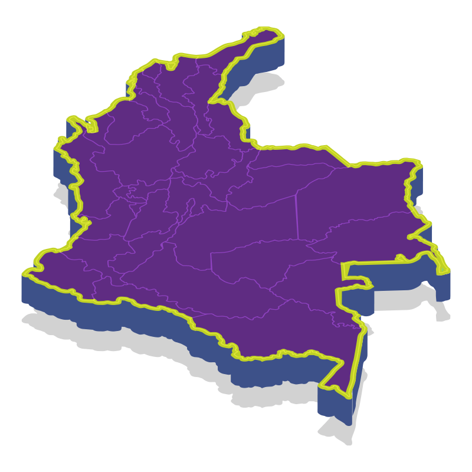

Nuestros asociados a nivel nacional
Una red sólida de 17 clínicas comprometidas con tu seguridad
Juntos estamos construyendo una red sólida de clínicas y cirujanos plásticos, comprometidos con la excelencia, la seguridad del paciente y el crecimiento en el campo de la cirugía plástica. Contamos con 17 clínicas asociadas a ASOCLICPER, todas habilitadas, con cirujanos plásticos acreditados.
0Clínicas
0Departamentos
0Pacientes atendidos

Nuestros asociados
Clínicas de cirugía plástica en Colombia
Filtra por departamento o busca por nombre. Cada ficha reúne dirección, contacto, servicios y la información oficial de la clínica.
Testimonios
Breves testimonios sobre la calidad y atención de las clínicas
Pacientes y equipos médicos cuentan su experiencia dentro de nuestra red de clínicas asociadas.
¡Celebramos tener 17 clínicas asociadas!
¿Necesitas asesoría para elegir tu clínica o quieres ser parte de nuestra comunidad?
En ASOCLICPER nos unimos a clínicas con los más altos estándares de calidad y seguridad, junto a cirujanos plásticos certificados y equipos médicos altamente calificados.